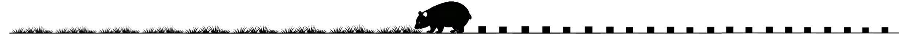

欢迎来到 BlaBlaCut 👋¶
Life is Short, You need BlaBlaCut.
🔍
输入关键词搜索论文笔记或阅读清单...
🚀 核心功能：这里有什么？¶
BlaBlaCut 利用 LLM 为论文制作三份核心报告：
- 📚 主阅读报告：循序渐进，对论文各章节进行深度拆解与解释。
- 📈 图表分析报告：图文对照，逐个击破论文中所有图表的含义。
- 👶 ELI5 详解报告：通俗演绎，用最直白的话讲解核心的创新点。
🧭 导航指南¶
- 归纳浏览：本站的论文笔记通过左侧导航栏的 阅读清单 进行归纳。
- 快速查找：您也可以尝试使用 上方的搜索栏 或 右上角的搜索功能 直接搜索论文笔记。
希望本项目能够对你有所帮助！

📖 关于本项目¶
BlaBlaCut 的诞生，源于我在使用 AI Chatbot 辅助阅读论文时的一次顿悟。
我发现自己总是重复地向 Chatbot 询问几乎完全一致的问题：
- “核心创新点是什么？”
- “这张表什么意思？”
- “请通俗解释一下这个算法”
并且由于缺乏系统性的整理，这些宝贵的问答往往散落在与 Chatbot 的历史对话中，无法形成积累。
于是我决定自己搭建一个简单的 Agent，一次性将我可能会想要问的问题问个干净，并自动整理成文档存储起来，甚至能够上传至网站来供大家阅览和分享。
💡 为什么需要 AI 辅助阅读？¶
在调教 Agent 的过程中，我自我剖析了 “为什么比起读论文原文，我更依赖 Chatbot 的讲解”：
- ⚡️ 语言障碍：切换成中文至少开个1.25x倍速；
- 📝 结构化输出：相比论文的自然语言，分点陈述更能突出重点，利于快速扫描；
- 📊 图表解释：图表往往是略读时，读完摘要后的第一站，AI 的直接解读省去了在正文中翻找解释的繁琐；
- 🧩 通俗解释：缺乏充足的知识储备时，直面“众所周知”是残酷的，ELI5（Explain Like I'm 5）通常是一个得力的脚手架。
于是乎，BlaBlaCut就成为了现在的模样。
📧 联系方式：任何建议，请联系 isliujunjie@163.com。